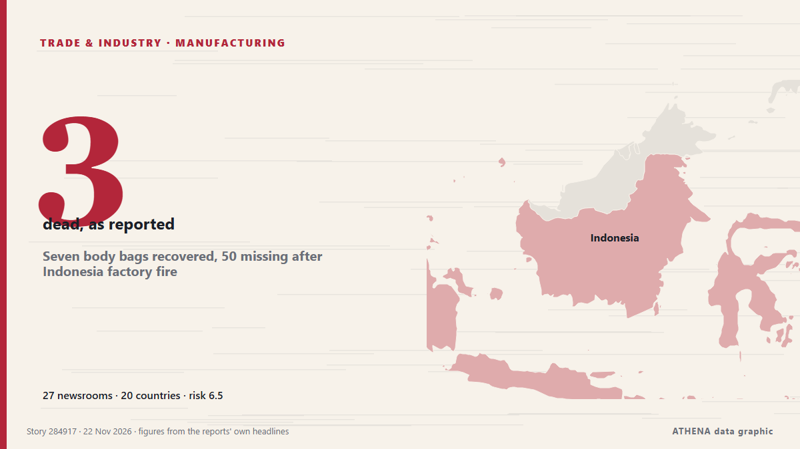

ATHENA Glaux Intelligence — Global news intelligence — every number explained
Every headline, checked across countries.
ATHENA Glaux reads 633 news outlets worldwide. A story becomes a verified event only when independent outlets report it. Each event shows who was first and a risk score with its reasons.
Earthquake or flood near you this week?
Type your town and see the earthquakes, floods, storms and official warnings near it, with a 72-hour emergency kit checklist. Free, no sign-up, and your place stays on your device.
Reports drift in from independent outlets - when two meet on the same story, it becomes a verified event.
How ATHENA checks a story
- CollectReports arrive from independent outlets in many countries.
- MatchWhen two outlets meet on the same story, it becomes a verified event.
- ExplainEach event shows who was first, how far it spread and why the risk is what it is.

Trade & IndustrySeven body bags recovered, 50 missing after Indonesia factory fire
Indonesian police recovered seven body bags and rescuers were searching for about 50 workers who were missing on Sunday after a fire tore through a factory in western Java, as firefighters tackled… from Dawn
Anthropic claims AI-assisted breakthrough on 167-year-old math problem
Levent Alpoge says he has proved the Riemann hypothesis, proposed by Bernhard Riemann in 1859. from Express Tribune
ICE arrests 2 at Seattle airport in 'chilling' scenes — governor
Washington's governor has denounced the arrests made by ICE officers at Seattle's airport, calling the incident "horrific." from DW English

Ships at the world's chokepoints now
Live AIS counts. Tap or hover a bar for the detail.
Latest reports
Dubai's Nakheel raises Dh5.5bn after selling out first phase of new Palm Springs project
Just accept Brexit and move on, Theresa May urges Andy Burnham
'Jewish terrorism in every sense': Eisenkot blames Smotrich and Ben Gvir for settler attacks
At least 14 people missing after Russian drone hit building in Kyiv region, says Zelensky
Exclusive-Like SpaceX, Anthropic ran an unusual IPO process, chafing some bankers
Sudan Capital Faces New Drone Threat
Israeli occupiers attack 4 Palestinian villages in occupied West Bank, torch vehicles
South Korea Education Minister Resigns Over AI Cheating Scandal
Athlete swims Strait of Hormuz to highlight Iran war's wildlife toll
British endurance swimmer Lewis Pugh has swum the Strait of Hormuz to highlight environmental threats during ongoing conflict. from CBS News (World)
Countries open path towards 'killer robots' pact
The 128 countries agreed to begin developing an international framework on lethal autonomous weapons systems over the next two years. from Free Malaysia Today
Fossil fuels still missing from latest COP31 draft deal
TURKIYE: The COP31 presidency proposed an eleventh-hour deal Sunday that again fails to mention fossil fuels -- an omission that deepened a tense standoff at the UN climate talks. from New Straits Times
Geopolitics, Politics & Security
More ›Netanyahu and Eisenkot parties resume talks to form Israel government
Former deputy governor tells Central Banking prime minister’s proposals are ‘stupid’ and ‘crazy’ from Central Banking
- Diplomacy & summits
Eisenkot invites Netanyahu's party for Israeli coalition talks
- Diplomacy & summits
Marcos pushes back on Trump’s claim of exclusive US food buys
- Diplomacy & summits
N. Korean leader receives credentials from Russian ambassador in protocol shift after 30 yrs
- Defence & national security
Pentagon moves to restrict US-Canada defence ties
Economics, Finance & Markets
More ›Beyond Degrees: Skills Take Centre Stage in Hiring
Employers are increasingly prioritising practical experience, proven abilities and professional skills alongside traditional academic qualifications. from News of Bahrain
- Debt & budgets
EU leaders’ chair proposes new cuts to EU 2028-2034 budget draft, suggests digital tax
- Commodities & market stress
PM Modi Credits People For Fall In Gold Prices, Links It To His May Appeal
- Debt & budgets
US to welcome international co-productions once tax credit in place, says Trump advisor
- Inflation & interest rates
Malaysia set to hold rates on strong growth, signal hike in 2027
Trade, Industry & Infrastructure
More ›Truckers strike, blackouts spread as blockade pushes Iran to the brink
As Iran's regime continues to defy the United States, the Islamic Republic's economy is showing alarming signs of economic collapse. from Israel Hayom (English)
- Supply chains & logistics
Iran to start rolling power cuts Sunday
- Trade & trade deals
India-EU trade pact likely to be signed on December 16
- Aviation, rail & road
National strike to halt commercial flights in Belgium on Monday
- Aviation, rail & road
Dubai Metro’s Blue Line project nearly 30% complete as train design revealed
Energy, Resources & Environment
More ›COP31 in Antalya: five takeaways from the ‘implementation’ climate summit
After three decades of UN climate summits, and little progress on climate finance, this year’s meeting (COP31) in Turkey, is likely to be remembered less for what negotiators agreed than for the… from EUobserver
- Electricity & power
Russian attacks cause power outages in five Ukrainian oblasts
- Climate & climate policy
COP31 makes history as longest-ever UN climate conference
- Extreme weather & natural disasters
Supercell storm devastates Brazilian town
- Climate & climate policy
COP31 climate deal in the balance after fractious talks
Technology, AI & Cybersecurity
More ›Little Mercury gets its first visitor in years as a pair of spacecraft loop into orbit
CAPE CANAVERAL, Florida: A pair of spacecraft slipped into orbit around Mercury on Saturday after an eight-year cruise through the inner solar system to unravel our littlest planet’s mountain of… from Arab News
- Artificial intelligence
Africa: WGS Dialogue for Latin America and the Caribbean Explores Stronger Cooperation in Shaping the Future
- Chips & computing
China’s Spies Set Sights on A.I. Chips Years Before Nvidia Scandal
- Artificial intelligence
'Not MAGA' anymore: Elon Musk has regrets
- Artificial intelligence
Bitcoin price drops to $60K as Anthropic drops to $87 in tech sell-off
Business, Companies & Investment
More ›Defense, AI, High Tech: A Delicate Balance Between Armies and Industry
Defence, AI, high tech: a delicate balance between armies and industry. from Gulf News
- Investment & capex
World Children’s Day: UNICEF urges greater investment in children
- Corporate strategy
Greek Gas Reserves Could Deliver Greater Prosperity for Citizens
- Startups & innovation
Five recognised for community service at Guru Nanak Awards
- Corporate strategy
Russia's Wildberries CEO Steps Down Days After EU Sanctions, Media Report
Accidents & emergencies
More ›NFL’s Jaylen Harrell hospitalised and investigated for assault in car crash
Police in US investigating whether Tennessee Titans defensive end assaulted rideshare driver before collision. from Al Jazeera English
- Accidents & emergencies
Family says woman, 19, killed in crash outside A&E is 'gone far too soon' in touching tribute
- Accidents & emergencies
Man arrested after Tsim Sha Tsui crash kills 1 pedestrian, injures 3
- Accidents & emergencies
Titanic survivor’s diamond ring sells for £150,000 at auction
- Accidents & emergencies
At least 24 dead in Nigeria after boat carrying people to a funeral capsizes
Three ways to read today
Start with the one that fits your timeVerified events
Ranked by how widely they are reported
- Russian Cargo Ship Targeted by Drones in Black Sea Amid Escalating Conflict107 outlets · 48 countriesRisk 7.5
- Jensen Huang has 5 ways to push for an Nvidia comeback146 outlets · 47 countriesRisk 4.6
- Iranian Official Accuses Trump of Hiding US Casualties in Iran War115 outlets · 44 countriesRisk 6.5
- Russian vessel struck by drone near Finland still on fire102 outlets · 38 countriesRisk 7.4
- Tanker struck in strait as Bahrain says Iran hit facility86 outlets · 33 countriesRisk 4.8
Analysis Desk
Ask a question and read a reasoned assessment of a leading story, with what would prove it wrong.
Open the Analysis Desk ›Today in numbers
| 16:00 | 393 |
|---|---|
| 17:00 | 409 |
| 18:00 | 368 |
| 19:00 | 236 |
| 20:00 | 396 |
| 21:00 | 307 |
| 22:00 | 202 |
| 23:00 | 309 |
| 00:00 | 154 |
| 01:00 | 388 |
| 02:00 | 217 |
| 03:00 | 242 |
| 04:00 | 320 |
| 05:00 | 231 |
| 06:00 | 449 |
| 07:00 | 257 |
| 08:00 | 426 |
| 09:00 | 442 |
| 10:00 | 851 |
| 11:00 | 465 |
| 12:00 | 327 |
| 13:00 | 477 |
| 14:00 | 7 |
| 15:00 | 310 |
Risk of today's events
Emerging signals
- New name in the news · Active nowSparta II
- Sudden surge · Active nowBayelsa State
- New name in the news · Active nowDymer
- Sudden surge · Active nowSun
- Sudden surge · Active nowMeza Flores
Official warnings
- M 5.9 - 238 km SW of Yanglong, ChinaM5.9 · PAGER yellow · USGS ·
- Orange notification for tropical cyclone AKVAN-26. Population affected by Category 1 (120 km/h) wind speeds or higher is 0 (20.826 million in Tropical Storm).Orange · GDACS ·
Stay informed
ATHENA Weekly Risk Picture
The week's biggest geopolitical, economic and shipping risks, cross-checked and scored.
Every Friday at 08:00 Athens time · free · in English
Subscribe freeATHENA on Telegram
News the moment it is published: breaking events at risk 6 or more, an hourly round-up, risk-tracker updates and the daily briefing at 10:00.
Free · posts in English · leave at any time
Join the channelSign-up is handled by beehiiv with double opt-in: nothing you type is sent to ATHENA, and every issue has an unsubscribe link.
Risk trackers
More ›Global risk outlook — week 47, 2026 (16–22 Nov) ›